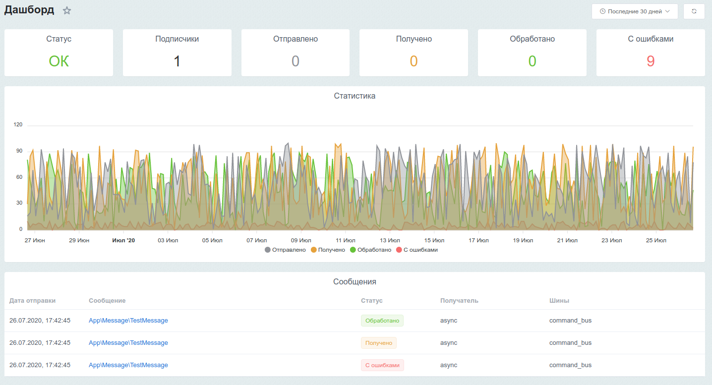
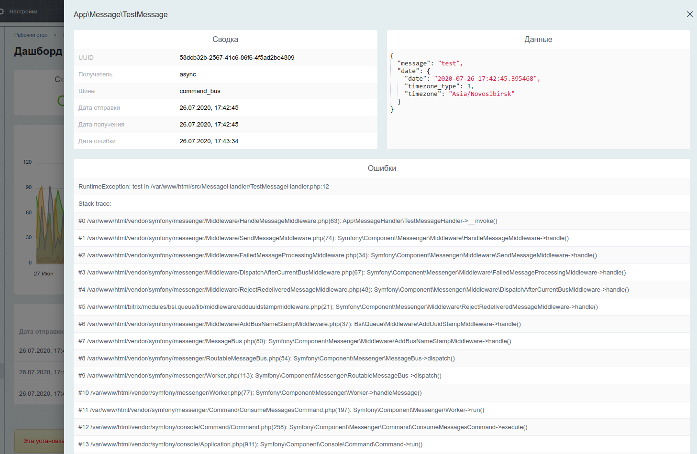

# Мониторинг
Модуль включает в себя мониторинг очередей с дашбордом. Мониторинг позволяет отслеживать основные показатели очередей и выводить детальную информацию по обработке каждого сообщения.


# Конфигурация
Параметры конфигурации мониторинга описаны в разделе Конфигурация.
# Очистка
По умолчанию, статистика по сообщениям хранится 365 дней. Изменить это значение можно в настройках модуля.